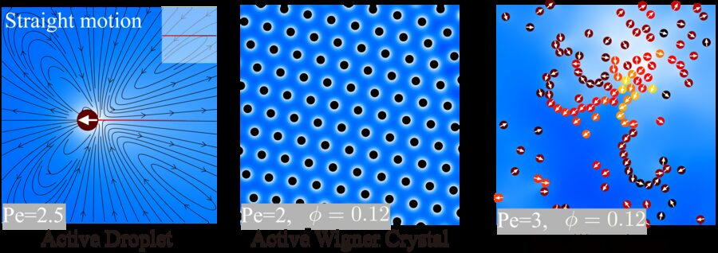
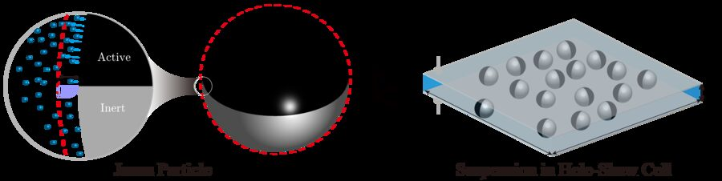
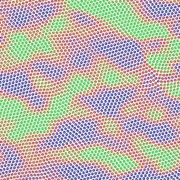
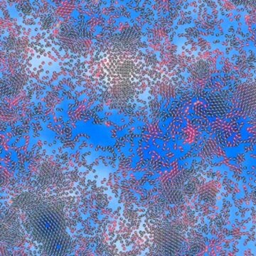

About
I am a computational engineer working where physics-based simulation, high-performance computing, and machine learning meet.
I am currently an AI Computing Architect at Black Sesame Technologies in Singapore, where I build chip functional models and performance-modeling methodologies for AI/vision workloads on edge-AI and autonomous-driving SoCs.
I received my Ph.D. in Mechanical Engineering from the National University of Singapore in 2025, advised by Prof. Lailai Zhu. My doctoral work used large-scale, agent-resolved simulations to understand how chemically active particles — microswimmers and active droplets — self-organize into crystals, liquids, and active turbulence. Before that, I studied Petroleum Engineering at China University of Petroleum (East China), developing SPH solvers for multiphase flow in porous media.
My core strength is the equations of mathematical physics: formulating partial differential equations for physical systems, analyzing them, and solving them numerically — from finite-difference, lattice Boltzmann, immersed-boundary, and particle (SPH) methods to physics-informed neural networks.
- Mathematical physics & PDEs
- Numerical PDE solvers
- Computational fluid dynamics
- Active matter & microswimmers
- LBM / IBM / SPH solvers
- GPU & parallel computing
- Physics-informed ML
- Reinforcement-learning control
- Performance modeling
News
- Active wave turbulence in hexatic phase is published in Physical Review Letters Editors' Suggestion
- Co-authored paper on particle partitioning at fracture bifurcations published in International Journal of Multiphase Flow.
- Joined Black Sesame Technologies (Singapore) as an AI Computing Architect.
- Completed my Ph.D. in Mechanical Engineering at NUS.
- Talk at the APS March Meeting on two-dimensional melting of active Wigner solids.
- Received the NUS PhD Research Excellence Award.
- Shaping active matter from crystalline solids to active turbulence is published in Nature Communications Editors' Highlights
Research
Collective dynamics of chemically active droplets
Tuning the activity of a phoretic medium alone can drive its solid–liquid–gas phase transitions and, in the fluid phases, laminar–turbulent transitions. Using agent-resolved simulations that capture many-body, long-range hydrochemical interactions, we map how isotropic autophoretic disks form active Wigner crystals, oscillating liquids, and active turbulence — reconciling seemingly conflicting experiments and suggesting routes to reconfigurable materials. [Nat. Commun. 2024] [PRL 2026]

Motility-induced phase separation of Janus colloids
Self-propelled particles accumulate where they move slowly, and crowding can reinforce this into motility-induced phase separation (MIPS). With fully resolved 3D simulations of chemically active Janus particles confined in a Hele-Shaw cell, I examine whether — and how — MIPS survives once hydrodynamic and chemical interactions are taken into account.

Learning, control, and GPU simulation
I also build physics-informed neural networks that solve fluid PDEs and recover governing equations via symbolic regression, and deep reinforcement-learning frameworks, coupled with real-time GPU (C/C++/CUDA) simulators, for trajectory optimization and cooperative control of multi-link microrobots in fluids.
Publications
Underlined = me. Full list on Google Scholar.
-

Active wave turbulence in hexatic phasePhysical Review Letters 137, 128301 (2026) Editors' Suggestion@article{yang2026active, title = {Active Wave Turbulence in Hexatic Phase}, author = {Yang, Qianhong and Zhang, Xinxin and Jiang, Maoqiang and Zhu, Guangpu and Liu, Zhaohui and Galtier, S{\'e}bastien and Zhu, Lailai}, journal = {Physical Review Letters}, volume = {137}, pages = {128301}, year = {2026}, doi = {10.1103/jq6g-pmq6} } -

Shaping active matter from crystalline solids to active turbulenceNature Communications 15, 2874 (2024) Editors' HighlightsActivity alone governs solid–liquid–gas transitions and laminar–turbulent transitions in a phoretic active medium.
@article{yang2024shaping, title = {Shaping active matter from crystalline solids to active turbulence}, author = {Yang, Qianhong and Jiang, Maoqiang and Picano, Francesco and Zhu, Lailai}, journal = {Nature Communications}, volume = {15}, pages = {2874}, year = {2024}, doi = {10.1038/s41467-024-46520-4} }
Other journal articles
-
Int. J. Multiph. Flow2026Partitioning of neutrally buoyant particles at a fracture bifurcationInternational Journal of Multiphase Flow 203, 105891 (2026)
-
Fractals2021A fractal multiphase transport model in shale porous media with multiple transport mechanisms and rock–fluid interactionFractals 29(02), 2150037 (2021)
-
J. Pet. Sci. Eng.2020Pore-scale investigation of petro-physical fluid behaviours based on multiphase SPH methodJournal of Petroleum Science and Engineering 192, 107238 (2020)
-
Comput. Fluids2019A comprehensive SPH model for three-dimensional multiphase interface simulationComputers & Fluids 187, 98–106 (2019)
Under review
-
J. Fluid Mech.under reviewDeposition pattern of colloidal particles on a solid surface by bubbles in a confined channelJournal of Fluid Mechanics, under review (2026)
Experience
-
Jan 2026 – now
AI Computing Architect
Black Sesame Technologies (Singapore) Pte. Ltd.- Chip functional models and performance-modeling methodologies for AI/vision workloads on edge-AI and autonomous-driving SoCs.
- Design trade-off analysis across performance, implementation constraints, and compute efficiency at the hardware/software boundary.
- Firmware/middleware frameworks and validation tooling that inform product and technology roadmaps.
-
Aug 2025 – Feb 2026
Research Assistant — Deep RL control of multi-link robots in fluids
National University of Singapore · with Prof. Lailai Zhu- Deep reinforcement-learning frameworks for trajectory optimization and control of microrobots.
- GPU simulation platforms (C/C++/CUDA) for real-time cooperative multi-agent simulation.
-
Aug 2021 – Oct 2025
Ph.D. Researcher — Collective simulations of active particles as microfluidic robots
National University of Singapore · with Prof. Lailai Zhu- Parallel PDE simulation framework (C++/MPI/OpenMP) for large-scale multi-agent fluid–structure interaction, up to ~100× faster than baseline.
- Benchmarked predictions against theory and experiments; automated analysis and visualization pipelines (MATLAB/Python/ParaView).
- Results in Nature Communications and Physical Review Letters.
-
Mar 2024 – Jul 2024
Research Assistant — Physics-informed neural networks
National University of Singapore- PINN-based solvers for fluid PDEs, combined with symbolic regression to discover governing equations.
-
Sep 2017 – Jun 2020
M.Eng. Research — Porous-media flow via smoothed particle hydrodynamics
China University of Petroleum (East China) · with Prof. Jun Yao- SPH multiphase flow solver (Fortran + OpenMP) for pore-scale reservoir flow and interface evolution.
Education
-
2021 – 2025
Ph.D., Mechanical Engineering
National University of Singapore · Advisor: Prof. Lailai Zhu; Co-advisor: Prof. Teo Chiang Juay -
2017 – 2020
M.Eng., Petroleum Engineering
China University of Petroleum (East China) · Advisor: Prof. Jun Yao -
2013 – 2017
B.Eng., Petroleum Engineering
China University of Petroleum (East China)
Talks & Conferences
- Mar 2025Two-dimensional melting of active Wigner solids in dense phoretic disk suspensions
APS March Meeting, California, USA - Sep 2022Emerging states of isotropic autophoretic disks: from crystalline solids to active turbulence
The Physics of Biological Systems Summer School, Madrid, Spain - Oct 2018Microscale shale gas flow simulation based on the SPH method
10th National Conference on Fluid Mechanics, Hangzhou, China - Aug 2018Three-dimensional multiphase flow SPH simulation based on CSF
Mesh-Free Particle Methods: Progress and Applications Seminar, Xi'an, China
Honors & Awards
- 2024PhD Research Excellence Award · National University of Singapore
- 2016 – 2019First-class Scholarship · China University of Petroleum (East China)
- 2016First Prize, National Undergraduate Mathematical Contest in Modeling · Chinese Mathematical Society
- 2016Third Prize (Team), 7th China Petroleum Engineering Design Competition
- 2015National Endeavor Scholarship; Progress Scholarship · China University of Petroleum (East China)
Teaching
- Aug – Oct 2022ME2134 Fluid Mechanics I Lab: Flow and Energy Loss · Teaching Assistant, NUS
- Jan – Apr 2022ME2121 Engineering Thermodynamics and Heat Transfer · Teaching Assistant, NUS
In-house Codes & Skills
PFlows-GPU
LBM–IBM fluid–structure interaction solver for many active particles and multi-link swimmers. C/C++ with GPU acceleration; large-scale 2D.
PFlows-Phoretic-CPU
LBM–IBM solver for phoretic active particles. C/C++ with MPI; 2D and 3D.
SPH-Porous
SPH solver for multiphase, thermal, and reactive flows in porous media. Fortran with OpenMP; 2D and 3D.